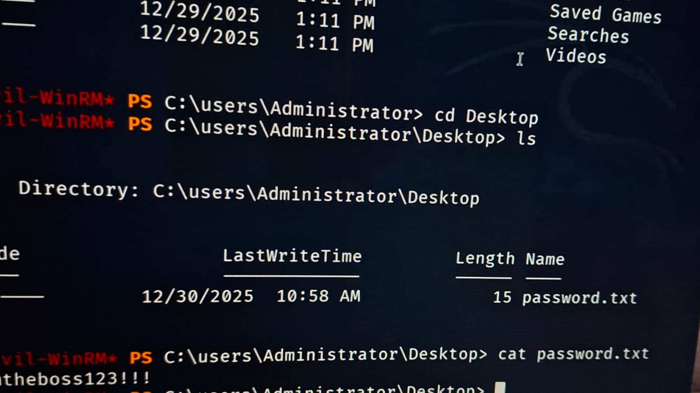
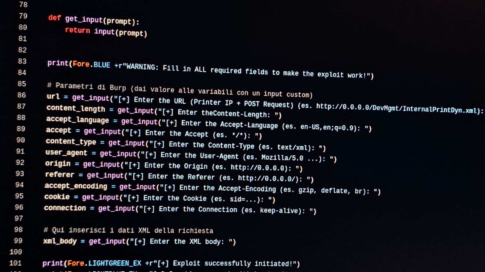

")
FKING LOUD
La mia serie di subwoofers PA e fullrange ad alta sensibilità (fullrange in sviluppo)
")
Telefono Custom
Più figo dell'iPhone 27 Pro Max... Kali Linux nelle tue mani
")
TheHiddenWiredProject
Creato per fun, puoi sniffare tasti e avere una backdoor nello stesso tempo! IL TUTTO VIA TOR!! (successore di KLBK)

ADMission
Creato per bucare le reti Active Directory attraverso l'ingegneria sociale e l'incompetenza dei tecnici. Fidati: FUNZIONA (se sai cosa fare)

Paper Jammer
Con questo puoi far finire la carta in TUTTE le stampanti HP che non hanno auth (in TUTTO IL MONDO)
")
TheFunnyProject
Un malware-like che crea FX a schermo grazie alle API di Windows, gli effetti puoi attivarli e disattivarli da remoto.